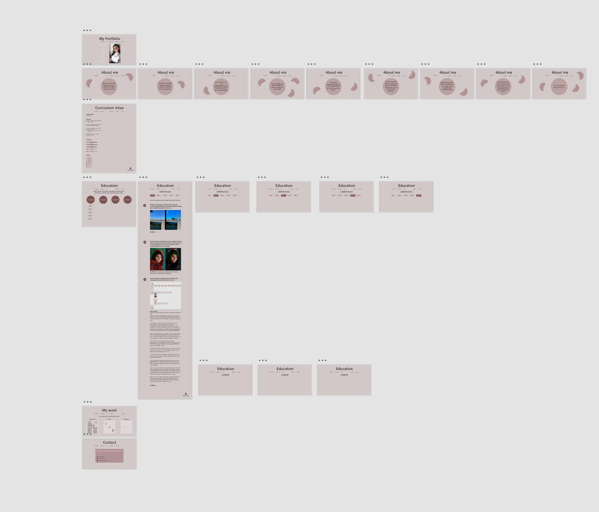
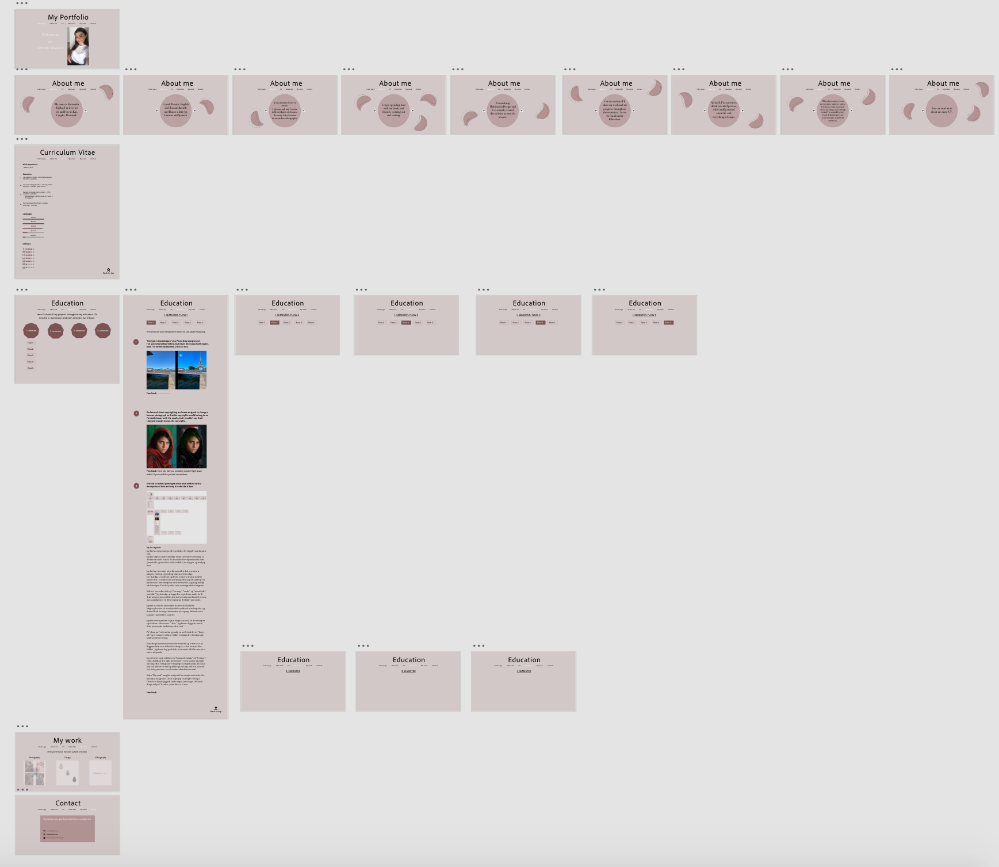

In this flow we learned how to use Adobe Photoshop and Adobe Xd. We also learned about copyrighting.
In the final project we had to "dream" our own portfolio, so we had to create a prototype of our website in Adobe Xd and afterwards explain our choices - why it looks the way it does.
Flowproject

My description:
Jeg har lavet en prototype til et portfolio, der afspejler min kreative side.
Jeg har valgt at samle forskellige emner, der interesserer mig, så det hele er samlet ét sted. På den måde bliver hjemmesiden mere spændende og man får et bedre indblik i, hvem jeg er, og hvad jeg laver.
Jeg har lagt stort vægt på, at hjemmesiden skal være nem at navigere rundt på, og at alting skal være letlæseligt.
Det skal ikke se rodet ud, og derfor er diverse tekster fordelt i mindre dele - i stedet for en stor klump. Hvis jeg selv støder på en hjemmeside, hvor alting bare er skrevet ud i ét, så går jeg hurtigt ud af den igen. Det skal jo ikke være anstrengende for brugeren.
Siden er overordnet delt op i “om mig,” “studie” og “mit arbejde/portfolie.” Jeg har valgt, at bygge den op på denne måde, fordi dette netop er mit portfolio, der skal vise mig som (kreativ) person, men samtidig være en del af et projekt, der følger mit studie.
Jeg har lavet en del undersider, da dette skal forbedre brugeroplevelsen, så man ikke skal scrolle ned af en lang side, og dermed få alt for meget information på en gang. Informationen kommer i små bidder - sorteret.
Jeg har bevidst primært valgt at bruge sans serif, da det er simpelt og moderne - det er mere “clean.” Jeg kunne dog godt, senere, finde på at ændre brødteksten til en serif.
På “about me”-siderne har jeg valgt en serif, fordi det ser “finere ud,” og er nemmere at læse, hvilket er vigtigt der, da teksten på nogle af siderne er lang.
Farverne på hjemmesiden matcher hinanden og er rare at se på. Baggrundsfarven er forholdsvis dæmpet, så den forstyrer ikke blikket. Jeg kunne dog godt finde på at ændre lidt i farverne på et senere tidspunkt.
Jeg overvejer også, at få lavet en “kontakt-formular” på “Contact”-siden, da folk på den måde har nemmere ved at komme i kontakt med mig. Man er langt mere tilbøjelig til at tage kontakt, hvis man blot skal udfylde sin mail og trykke på en knap, end hvis man selv skal finde personens sociale medier eller skrive en mail.
Siden “My work” mangler stadig at få lavet nogle undersider bl.a. med mine fotografier. Det er noget jeg vil arbejde videre på. Derudover kunne jeg godt tænke mig at sætte noget self-made design ind på CV-siden, så den ikke er så tom.
Feedback
- Really nice prototype.
- It's good that there's a little variation on the "about me" page with the small figures.
- Really good that you have divided it in semesters and flows since you have to do that for the exam.
- On the front page the "welcome to my creative universe" can be read as different links - you should rather put some of the words next to each other.
Changes after the feedback

Right after I got the feedback I changed the "welcome to my creative world" on the front page. I also made some minor adjustments, but I didn't really change much.